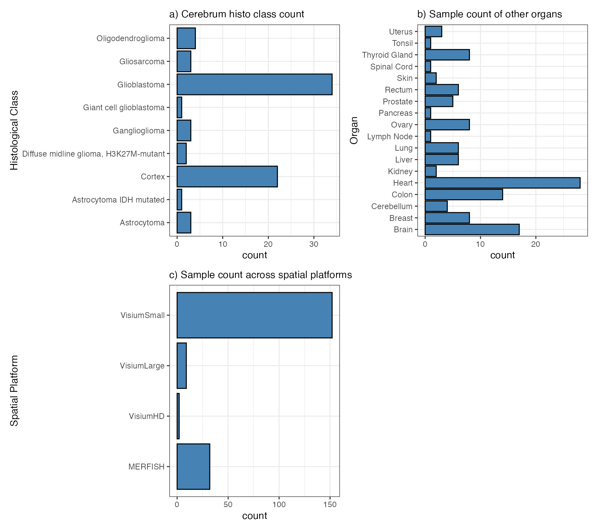
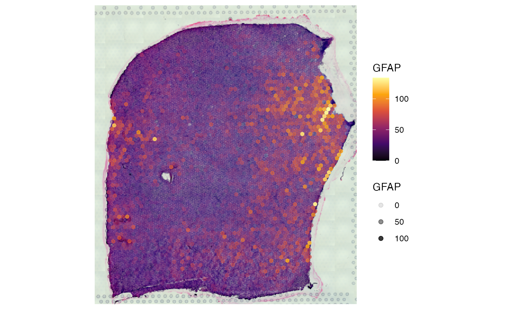
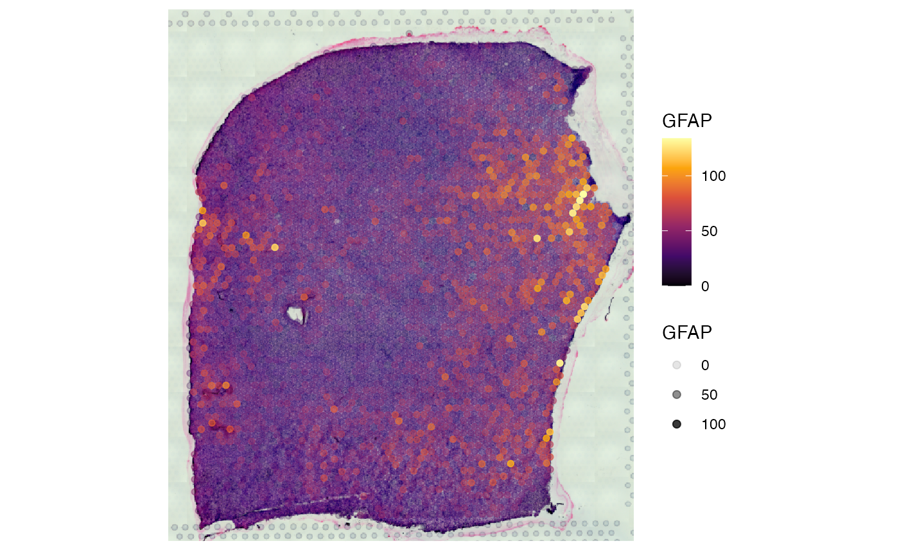

SPATAData
spata-data.Rmd1. Introduction
The package SPATAData gives access to our data base of spatial transcriptomic samples. Furthermore, it provides easy access to data sets that have been already published. We are continuously updating this collection so make sure to check for package updates on a regular basis.
Please note that many of these data sets are not owned by us! Make sure to use the correct citation if you download and use them for your analysis. See more under section 4. Citation.
# install SPATAData with:
devtools::install_github(repo = "theMILOlab/SPATAData")
# and if you have not already:
devtools::install_github("kueckelj/confuns")We, the MILOlab, are a workgroup focused on
neurooncology. Our database is predominantly composed of human samples
from the human cerebrum (panel a). Nonetheless, we have also curated
multiple objects from various other organs with distinct histological
classifications (panel b). Utilize the source data.frame as
described below to obtain an overview and filter samples that may be
relevant to your research. Note the differentiation between the organ
Brain for mice tissue donors and Cerebrum for human
tissue donors. This distinction is important because, in the case of
Visium datasets, mouse samples usually encompass the entire intracranial
central nervous system (commonly referred to as Brain). Due to
their size, human brain samples are derived from specific organs
(column: organ, with values such as Cerebrum,
Midbrain, Cerebellum) and specific locations (column:
organ_part, with values such as frontal lobe,
temporal lobe, corpus callosum). While the number of
platforms (panel c) is currently dominated by VisiumSmall
we aim to expand this collection of data sets in the future to include
more of everything.

2. The source data.frame
The last version of SPATAData used to have an interactive interface
in which data samples could be viewed and downloaded by mouse click.
This interface is currently not available (but will be, hopefully, in
the months to come.) Till then, you can make use of the source
data.frame directly in combination with some dplyr logic.
The source data.frame of SPATAData, as obtained by
sourceDataFrame(), contains web links as well as meta data
to multiple spatial data sets that have been published so far. Currently
it counts a total of 195 samples across 20 organs and 19 histological
classifications. In the source data.frame every row corresponds to a
data set as stored in a SPATA2 object. Hence, you can use
dplyr to filter for data sets that fit your interest by filtering for
specific characteristics. Please refer to the documentationo of
sourceDataFrame() to familiarize yourself with the
variables of the source data.frame and the kind of meta data they
carry.
You can use unique() on each non numeric variable to
obtain groups by which to filter the object.
# load required packages
library(SPATA2)
library(SPATAData)
library(dplyr)
library(stringr)
#assign the data.frame
source_df <- sourceDataFrame()
# get unique donor species types
unique(source_df$donor_species)## [1] "Homo sapiens" "Mus musculus"
# get the different organs for which data exists
unique(source_df$organ)## [1] "Breast" "Cerebrum" "Tonsil" "Lung"
## [5] "Pancreas" "Colon" "Kidney" "Ovary"
## [9] "Prostate" "Brain" "Heart" "Thyroid Gland"
## [13] "Brainstem" "Cerebellum" "Lymph Node" "Spinal Cord"
## [17] "Rectum" "Liver" "Skin" "Uterus"
# get additional specifications of anatomical location
unique(source_df$organ_part)## [1] NA "frontal" "parietal" "frontotemporal"
## [5] "occipital" "temporal" "prefrontal" "hemisphere"
## [9] "thalamus" "corpus_callosum" "Ascending" "Cecum"
## [13] "Sigmoid" "Unspecified"
# get the different histo subclasses for which data exists
unique(source_df$histo_class)## [1] NA
## [2] "Glioblastoma"
## [3] "Oligodendroglioma"
## [4] "Astrocytoma"
## [5] "Cardiac Muscle"
## [6] "Healthy tissue"
## [7] "Graves disease"
## [8] "Hashimoto's thyroiditis and thyroid nodule"
## [9] "Hashimoto's thyroiditis"
## [10] "Cortex"
## [11] "Giant cell glioblastoma"
## [12] "Gliosarcoma"
## [13] "Astrocytoma IDH mutated"
## [14] "Ganglioglioma"
## [15] "Diffuse midline glioma, H3K27M-mutant"
## [16] "Lymph Node"
## [17] "Spinal Cord"
## [18] "Kidney"
## [19] "Adenocarcinoma"To filter the source data.frame it takes logical tests that represent your idea of the dataset you need. For instance, if you want all glioblastoma samples from the frontal and temporal lobe the code would look like this:
# filter for frontal and temporal glioblastoma
sourceDataFrame(histo_class == "Glioblastoma" & organ_part %in% c("frontal", "temporal"))## # A tibble: 24 × 32
## sample_name comment donor_id donor_species grade histo_class institution
## <chr> <chr> <chr> <chr> <chr> <chr> <chr>
## 1 MGH258 NA MGH258 Homo sapiens IV Glioblastoma Massachusetts …
## 2 ZH1019_inf NA ZH1007 Homo sapiens IV Glioblastoma University Hos…
## 3 ZH1019_T1 NA ZH1007 Homo sapiens IV Glioblastoma University Hos…
## 4 ZH881_inf NA ZH881 Homo sapiens IV Glioblastoma University Hos…
## 5 ZH881_T1 NA ZH881 Homo sapiens IV Glioblastoma University Hos…
## 6 ZH916_bulk NA ZH916 Homo sapiens IV Glioblastoma University Hos…
## 7 ZH916_inf NA ZH916 Homo sapiens IV Glioblastoma University Hos…
## 8 ZH916_T1 NA ZH916 Homo sapiens IV Glioblastoma University Hos…
## 9 UKF242T NA UKF242 Homo sapiens IV Glioblastoma University Cli…
## 10 UKF243T NA UKF243 Homo sapiens IV Glioblastoma University Cli…
## # ℹ 14 more rows
## # ℹ 25 more variables: lm_source <dttm>, organ <chr>, organ_part <chr>,
## # organ_side <chr>, pathology <chr>, platform <chr>, pub_citation <chr>,
## # pub_doi <chr>, pub_journal <chr>, pub_year <dbl>, sex <chr>, source <chr>,
## # tags <chr>, tissue_age <dbl>, web_link <chr>, workgroup <chr>,
## # mean_counts <dbl>, median_counts <dbl>, modality_gene <lgl>,
## # modality_metabolite <lgl>, modality_protein <lgl>, n_obs <int>, …If you want samples from a specific publication:
# look for publications and journals with string subsetting
sourceDataFrame(str_detect(pub_citation, pattern = "^Kuppe"))## # A tibble: 27 × 27
## sample_name donor_id donor_species histo_class histo_class_sub institution
## <chr> <chr> <chr> <chr> <chr> <chr>
## 1 10X001 P1 Homo sapiens Cardiac Muscle fibrotic_zone University…
## 2 10X0017 P3 Homo sapiens Cardiac Muscle ischaemic_zone University…
## 3 10X0018 P2 Homo sapiens Cardiac Muscle border_zone University…
## 4 10X0020 P3 Homo sapiens Cardiac Muscle remote_zone University…
## 5 10X0025 P2 Homo sapiens Cardiac Muscle ischaemic_zone University…
## 6 10X0026 P3 Homo sapiens Cardiac Muscle border_zone University…
## 7 10X0027 P5 Homo sapiens Cardiac Muscle fibrotic_zone University…
## 8 10X009 P4 Homo sapiens Cardiac Muscle control University…
## 9 ACH0010 P13 Homo sapiens Cardiac Muscle control University…
## 10 ACH0011 P15 Homo sapiens Cardiac Muscle border_zone University…
## # ℹ 17 more rows
## # ℹ 21 more variables: lm_source <dttm>, organ <chr>, pathology <chr>,
## # platform <chr>, pub_citation <chr>, pub_doi <chr>, pub_journal <chr>,
## # pub_year <dbl>, source <chr>, tags <chr>, web_link <chr>, workgroup <chr>,
## # mean_counts <dbl>, median_counts <dbl>, modality_gene <lgl>,
## # modality_metabolite <lgl>, modality_protein <lgl>, n_obs <int>,
## # n_tissue_sections <int>, obs_unit <chr>, obj_size <lbstr_by>The number of conditions is unlimited. Make yourself familiar with
the variables of the source data.frame as well as with the
dplyr::filter() logic. You can even process the data.frame
to filter for specific queries. E.g. if you want patient wise matching
of samples.
# look for several samples from one single patient
sourceDataFrame(!is.na(donor_id) & organ == "Cerebrum") %>%
group_by(donor_id) %>% # count the Cerebrum samples by donor
mutate(ns_by_donor = n()) %>%
filter(ns_by_donor > 1) %>% # keep only those samples with n > 1
arrange(donor_id)## # A tibble: 30 × 32
## # Groups: donor_id [12]
## sample_name donor_id donor_species grade histo_class institution
## <chr> <chr> <chr> <chr> <chr> <chr>
## 1 UKF242C UKF242 Homo sapiens NA Cortex University Clinic Frei…
## 2 UKF242T UKF242 Homo sapiens IV Glioblastoma University Clinic Frei…
## 3 UKF248C UKF248 Homo sapiens NA Cortex University Clinic Frei…
## 4 UKF248T UKF248 Homo sapiens IV Glioblastoma University Clinic Frei…
## 5 UKF256C UKF256 Homo sapiens NA Cortex University Clinic Frei…
## 6 UKF256TC UKF256 Homo sapiens IV Cortex University Clinic Frei…
## 7 UKF256TI UKF256 Homo sapiens IV Glioblastoma University Clinic Frei…
## 8 UKF259C UKF259 Homo sapiens NA Cortex University Clinic Frei…
## 9 UKF259T UKF259 Homo sapiens IV Glioblastoma University Clinic Frei…
## 10 UKF260T UKF260 Homo sapiens IV Glioblastoma University Clinic Frei…
## # ℹ 20 more rows
## # ℹ 26 more variables: lm_source <dttm>, organ <chr>, organ_part <chr>,
## # organ_side <chr>, pathology <chr>, platform <chr>, pub_citation <chr>,
## # pub_doi <chr>, pub_journal <chr>, pub_year <dbl>, sex <chr>, source <chr>,
## # tags <chr>, tissue_age <dbl>, web_link <chr>, workgroup <chr>,
## # mean_counts <dbl>, median_counts <dbl>, modality_gene <lgl>,
## # modality_metabolite <lgl>, modality_protein <lgl>, n_obs <int>, …3. Downloads
Whether you get them by filtering the source data.frame or because
you know them by name, to download SPATA2 objects the
sample names are required. There are two functions with which to
download SPATA2 object. The downloaded objects are
completely unprocessed. Hence, the plots you see above derive from raw
counts. Refer to the vignettes on object creation and processing to find
the pipeline you see fit for your data samples.
-
downloadSpataObject(): To download single objects. They can be saved on disc automatically but this function is particularly equipped for quick downloads and assignment to a variable in your R session. -
downloadSpataObjects(): Takes a character vector of sample names, then downloads and stores them all together in the specified directory.
3.1 Download and assign
This code chunk downloads single objects by sample name. It assigns the result to a variable in your global environment and you can immediately start with analysis and visualization.
# download objects by sample name and assign them to environment variables
object_heart <- downloadSpataObject(sample_name = "ACH0010")
object_gbm <- downloadSpataObject(sample_name = "UKF242T")
# left plot
plotSurface(object_heart, color_by = "HM_HYPOXIA")
# right plot
plotSurface(object_gbm, color_by = "GFAP", alpha_by = "GFAP") 

3.2 Download and saving on disk
This code chunk uses filtering and
downloadSpataObjects() to download a complete set into a
single folder.
# filter source data.frame
healthy_human_cortex_samples <-
sourceDataFrame(organ == "Cerebrum" & histo_class == "Cortex") %>%
pull(sample_name)
# create this directory or adjust it to your liking
folder <- "spata_objects/healthy_cortex"
dir.create(folder, recursive = TRUE)
# download samples
downloadSpataObjects(
sample_names = healthy_human_cortex_samples,
folder = folder
)
# show results
healthy_human_cortex_samples## [1] "151507" "151508" "151509" "151510" "151669" "151670"
## [7] "151671" "151672" "151673" "151674" "151675" "151676"
## [13] "UKF241C" "UKF242C" "UKF248C" "UKF256C" "UKF256TC" "UKF259C"
## [19] "UKF265C" "UKF313C" "UKF334C" "GBM5_2"4. Citation
As mentioned in the introduction, many samples provided here are not
owned by us, the MILOlab. We have collected these samples from openly
accessible sources and curated them to offer more example data sets for
use with SPATA2. If you use these data sets, please ensure that you cite
the corresponding papers correctly. When you download a
SPATA2 object using SPATAData, the citation information is
stored in the object’s metadata, specifically in the
@meta_sample slot alongside all the meta-information you
find in the source data frame. You can easily obtain the citation
instructions via the getCitation() function.
# cite Kuppe et al. 2022
getCitation(object_heart)## Citation: Kuppe, C., Ramirez Flores, R.O., Li, Z. et al. Spatial multi-omic map of human myocardial infarction. Nature 608, 766–777 (2022). https://doi.org/10.1038/s41586-022-05060-x
## Source: Kuppe et al 2022
# cite Ravi et al. 2022
getCitation(object_gbm)## Citation: VM Ravi, P Will, J Kueckelhaus, et al. Spatially resolved multi-omics deciphers bidirectional tumor-host interdependence in glioblastoma. Cancer Cell. 2022 Jun 13;40(6):639-655.e13. doi: 10.1016/j.ccell.2022.05.009. PMID: 35700707.
## Source: Ravi et al 20225. Sample meta data
Meta data about the sample are stored in slot @@meta_sample. It is a list that can be extended
flexibly with addSampleMetaData() We recommend, however, to
stick to the naming suggested by our source data.frame.
getSampleMetaData(object_heart)## $sample_name
## [1] "ACH0010"
##
## $donor_id
## [1] "P13"
##
## $donor_species
## [1] "Homo sapiens"
##
## $histo_class
## [1] "Cardiac Muscle"
##
## $histo_class_sub
## CTRL
## "control"
##
## $institution
## [1] "University Clinic Aachen"
##
## $lm_source
## [1] "2024-08-24 02:13:56 CEST"
##
## $organ
## [1] "Heart"
##
## $pathology
## [1] "myocardial_infarction"
##
## $platform
## [1] "VisiumSmall"
##
## $pub_citation
## [1] "Kuppe, C., Ramirez Flores, R.O., Li, Z. et al. Spatial multi-omic map of human myocardial infarction. Nature 608, 766–777 (2022). https://doi.org/10.1038/s41586-022-05060-x"
##
## $pub_doi
## [1] "doi.org/10.1038/s41586-022-05060-x"
##
## $pub_journal
## [1] "Nature"
##
## $pub_year
## [1] 2022
##
## $tags
## [1] "CTRL"
##
## $workgroup
## [1] "KuppeLab"
##
## $patient_group
## [1] "group_2"
##
## $patient_region_id
## [1] "GT/IZ_P13"6. Source code & Sharing
The SPATA2 objects have been curated manually by us
without any further processing. Data sets that derive from other
publications have been acessessed as suggested in the respective data
availability statement. SPATA2 objects have been created in
batches as can be tracked in the script
/scripts/populate_spata2v3_objects.R in the main repository of
SPATAData. If you want to make your data set easily accessible for users
via SPATAData please contact jan.kueckelhaus@uk-erlangen.de.